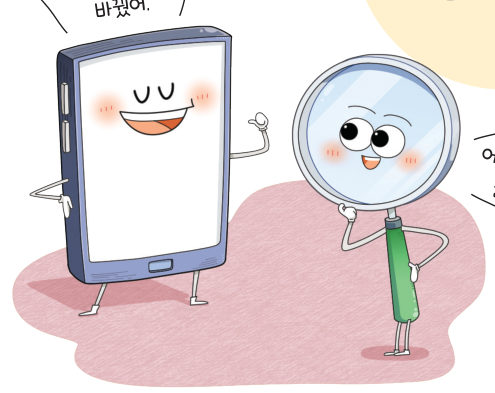
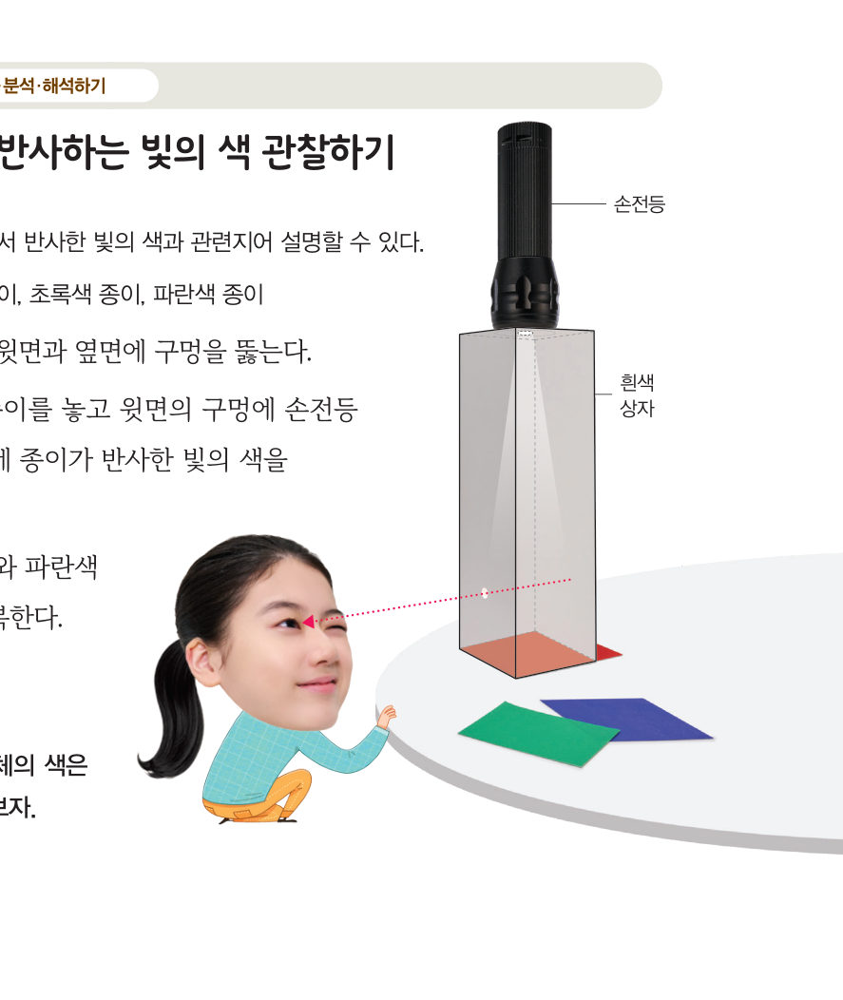
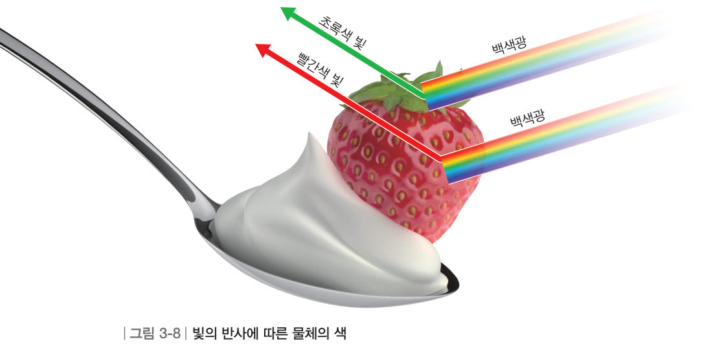
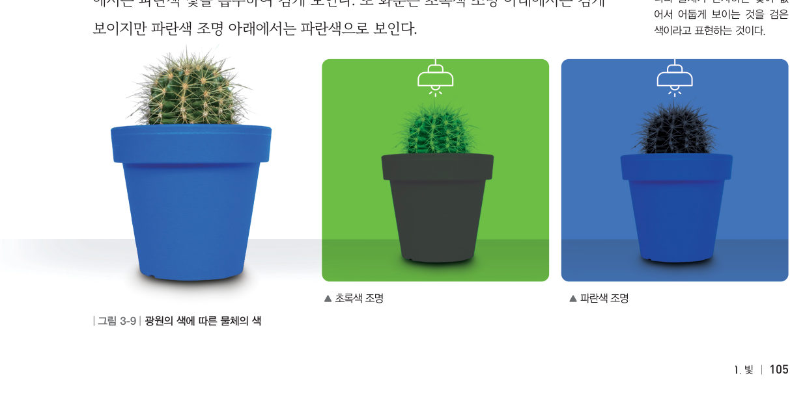
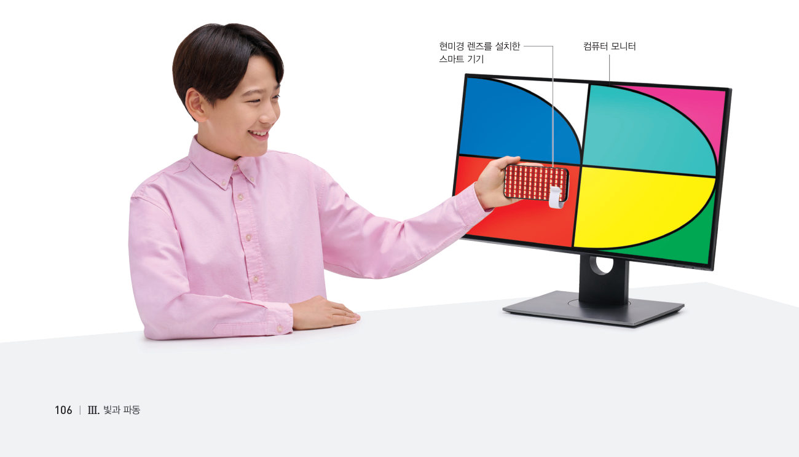
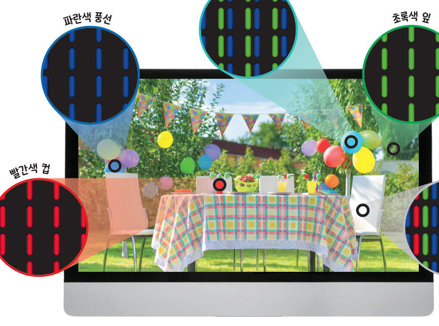
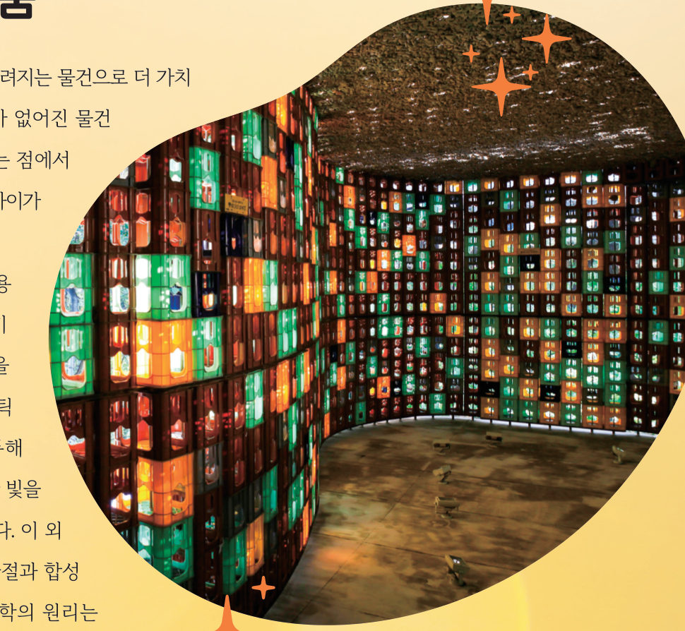

물체의 색과
빛의 합성
“화면을 흰색으로 바꿨어.” “어디 한번 자세히 들여다볼까?” 스마트 기기의 흰색 화면을 확대해 보면 어떻게 보일까? 흰색 상자, 색 조명, 가상 현미경, RGB 조명 섞기로 물체의 색과 빛의 합성을 알아보자.
- 아랫면이 뚫린 흰색 상자의 윗면과 옆면에 구멍을 뚫는다.
- 상자 아래에 빨간색 종이를 놓고 윗면 구멍에 손전등으로 빛을 비춘 뒤, 안쪽 면에 종이가 반사한 빛의 색을 관찰한다.
- 초록색 종이와 파란색 종이로 바꾸어 반복한다.

우리가 보는 물체의 색은 물체에서 반사하여 우리 눈으로 들어온 빛의 색으로 보인다. 예를 들어 그림 3-8과 같이 백색광 아래에서 딸기가 빨간색으로 보이는 것은 딸기가 ●백색광에 포함된 여러 가지 색의 빛 중에서 빨간색 빛은 반사하고, 나머지 색의 빛은 흡수하기 때문이다.
물체의 색은 광원의 색에 따라 다르게 보이기도 한다. 그림 3-9와 같이 초록색 조명 아래에서는 선인장이 초록색 빛을 반사해 초록색으로 보이지만 파란색 조명 아래에서는 파란색 빛을 흡수하여 검게 보인다.


💡 오개념 바로잡기 검은색 물체는 모든 색의 빛을 흡수하므로 반사하는 빛이 없다. 검은색 빛을 반사하는 것이 아니다.
텔레비전과 같은 영상 장치의 화면은 ●화소로 이루어져 있어 다양한 색을 표현할 수 있다.
- 스마트 기기의 카메라 렌즈에 맞춰 현미경 렌즈를 설치한다.
- 컴퓨터 모니터 화면에 다양한 색을 볼 수 있는 그림을 띄운다.
- 관찰 각각의 색을 띠는 곳에 현미경 렌즈를 대고 화소의 모습을 관찰한다.
- 한 가지 색을 확대한 모습을 촬영하여 공유 플랫폼에 올린다.
- 추리 다른 모둠이 공유한 화소의 모습을 보고 어떤 색인지 추리한다.

더 해 보기 · 조명으로 다양한 색 표현하기
손전등 3 개에 빨간색, 초록색, 파란색 셀로판지를 붙여 3 가지 색 조명을 만든 뒤 스크린에 비추어 다양한 색을 표현해 보자. ↓ 가상 조명으로 먼저 해 보자!
현미경으로 화면을 확대하면 빨간색, 초록색, 파란색 빛을 볼 수 있다. 이 세 가지 색의 빛은 여러 가지 색을 표현하는 기본이 되는 빛으로 빛의 삼원색이라고 한다. 빨간색과 초록색 빛을 합하면 노란색으로 보이고, 파란색과 빨간색 빛을 합하면 자홍색으로 보인다. 이처럼 서로 다른 색의 빛을 합하면 또 다른 색으로 보이는 현상을 빛의 합성이라고 한다. 영상 장치는 빨간색, 초록색, 파란색 빛을 내는 화소로 이루어져 있으며, 이를 켜고 끄거나 밝기를 조절하여 다양한 색을 표현한다.



업사이클링은 쓸모가 없거나 버려지는 물건으로 더 가치가 높은 물건을 만드는 일이다. 버려진 플라스틱 상자로 만든 작품은 상자에서 반사하거나 통과한 빛을 합성하여 다양한 색이 나타나도록 연출했고, 유리병으로 만든 조명은 빛의 굴절과 합성을 이용한다.
| ⑴ 영상 장치는 빛의 합성을 이용한다. | |
| ⑵ 영상 장치는 빨간색, 파란색, 자홍색 빛을 내는 화소로 이루어져 있다. | |
| ⑶ 각 화소에서 세 가지 색을 켜거나 꺼서 다양한 색을 표현한다. |
3물체의 색과 빛의 합성
⑵ 빛의 삼원색: 빨간색, 초록색, 파란색
⑶ 빛의 : 서로 다른 색의 빛을 합하면 또 다른 색으로 보이는 현상
① 영상 장치는 스스로 빛을 내는 광원이다. 영상 장치에서 나온 빛이 우리 눈에 들어오면 영상을 볼 수 있다. (95쪽) ② 영상 장치의 화면은 빛의 삼원색의 화소로 이루어져 있으며, 화소에서 나오는 빛을 합성하여 화면에 다양한 색을 표현한다. (108쪽)
| 평가 기준 | 스스로 평가 |
|---|---|
| 지식·이해 빛의 반사와 굴절, 거울과 렌즈의 상, 물체의 색과 빛의 합성을 설명할 수 있는가? | |
| 과정·기능 영상 장치가 색을 표현하는 원리를 관찰에 근거하여 추론했는가? | |
| 가치·태도 빛의 성질을 관찰하며 과학의 심미적 가치를 느꼈는가? |